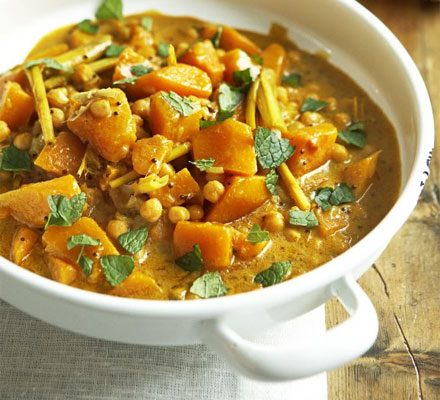

HOME
Pork Lau Lau

Pumpkin curry is a healthy and filling meal. It'll leave you warm and satisfied. It can be enjoyed as a stew or put on top of rice.
Ingredients:
- 1 tablespoon Sunflower Oil
- 3 tablespoon Thai Yellow Curry Paste
- 2 finely chopped Onions
- 3 large stalks Lemongrass, bashed with the back of a knife
- 6 Cardamom Pods
- 1 tablespoon Mustard Seed
- 1 Pumpkin or Small Squash
- 250ml Vegetable Stock
- 400ml canned Coconut Milk
- 400g Chickpeas
- 2 Limes
- large handful of Thai Basil Leaves
- Naan Bread (optional)
Preparation:
- Heat oil in a saute pan and fry Curry Paste with Onions, Lemongrass, Cardamom, and Mustard Seed for 2-3 mins.
- Stir Pumpkin or Squash into pan and coat in the paste. Then pour in the Stock and Coconut Milk.
- Bring everything to a simmer, add the Chickpeas and cook for 10 minutes until pumpkin is tender.
- In the pressure cooker, line the bottom with several balls of foil so that the foil wrapped Lau Laus won't touch bottom of the cooker.
- Serve with Lime wedges and Naan Bread.